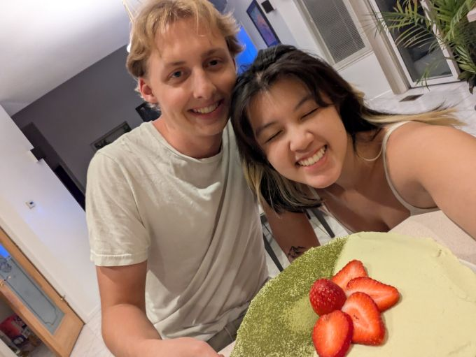
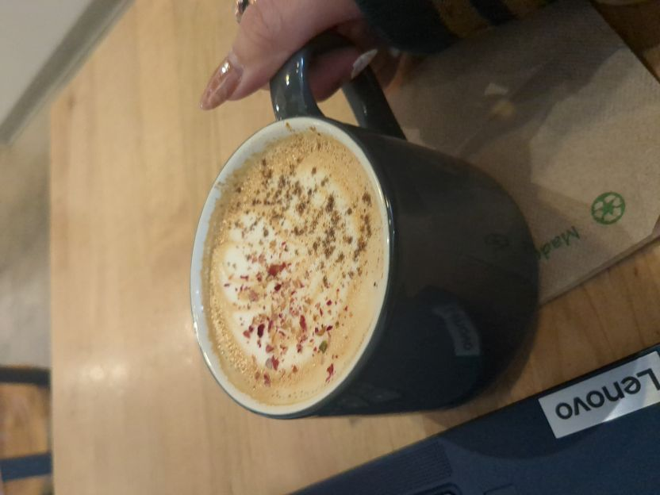
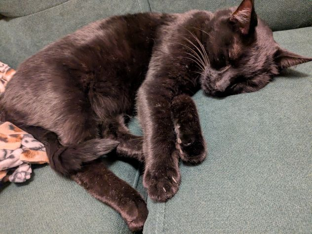

My name is Keira Vu. I'm a second year Creative Technology and Design major, and I have business and space minors. You'll probably find me at a cafe. I love coffee and would even like to have my own coffee shop one day.
Baking
I've got quite the sweet tooth, so I'll always love me a good dessert. I've been baking since I was a kid, mainly with my mom, but now more often with my boyfriend. We've made cakes, pies, and cookies, and I help him cook meals too.
Coffee
I got into coffee after getting rid of my energy drink addiction. I frequently go out to buy coffee, but I'll occasionally pour myself some instant or concentrate. My favorite coffee to get when I go out is the seasonal flavors.
Animals I Don't Own
I personally do not have time to own any of my own pets, but I still love interacting with animals! The cat's name is Loki and he is the neighborhood in/out cat. I think he likes my apartment unit the best.